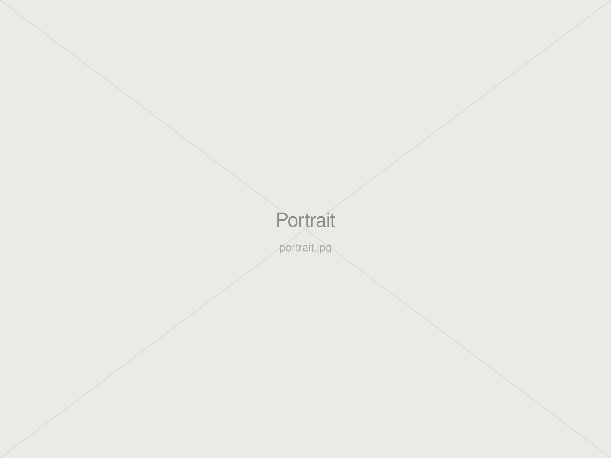

Design is not only about making things, but about shaping relationships.
I am Interaction designer and HCAI (human-centred AI) researcher. Design goes beyond objects and outcomes. It connects people, environments, systems and experiences--shaping how we understand, interact and coexist.

My route into research came through practice. Building things that had to survive contact with real people, such as an appliance interface, a clinical app and a museum companion, taught me to ask why a design works, not only whether it does.
That question pushed me toward study design and evaluation. Over the last three years I have run a sequential mixed-methods study on task initiation in adults with ADHD, eye-tracking and physiological experiments on online learning, and controlled evaluations of AI-assisted research tools. The studio work did not stop when the empirical work started; the two now check each other.
What connects them is a question about agency: when a system reasons on someone’s behalf, what happens to their own judgment? It runs through my dissertation on the moment before a task begins, through work on making AI inference legible rather than invisible, and through current research on preserving independent judgment in AI-assisted scientific workflows. For doctoral work I want to keep building systems that make machine reasoning inspectable and contestable, and to evaluate them with people who have something at stake in the answer.
A little about me.
I’m an interaction designer and researcher with a background in product design. My interests lie in Human-Centred AI: how technology can support people’s understanding, judgment, and ability to act, as well as their relationships with one another.
China → Milan → Aarhus
Life, in between.
Places, people, and moments I want to remember.
1 / 8
My story
A journey, one chapter at a time.
Choose a chapter to read.
A question that stayed with me
My path into interaction design began while I was teaching art part-time during my undergraduate studies. Working with an autistic child made me wonder how my design skills could respond to the support he needed in everyday life. That question led me from product design towards digital and interaction design, and eventually to further study at Politecnico di Milano.
China, Italy, Denmark
Collaborating across cultures during my master’s studies, alongside a six-month exchange at Aarhus University in Denmark, broadened my understanding of interaction. In D-Heart, I explored how people without specialist knowledge could understand and use medical technology. In PriVis, I contributed to interactions that help people understand what AI-powered AR glasses might infer about them and manage the resulting privacy risks. Designing Echoes, which explores intergenerational connections in cultural spaces, introduced another possibility: AI as a medium for experiences and narratives that bring people together. Across these projects, my attention expanded from interactions within a product to how technology enters everyday life and shapes communication and understanding.
Designing with responsibility
The pace of technological change has sometimes unsettled me. Just as I became comfortable with one tool, something new would emerge. Reading Don Norman’s Design for a Better World and attending an EU-supported summer school in sustainable interaction design helped me reconsider how I judge the value of design. I became more attentive to what an experience means in someone’s life, whose needs it overlooks, and the resources and consequences it carries over time. When I encounter a new technology, I now begin by understanding the problem worth addressing and considering how that technology might contribute.
The Business and Innovation course helped me understand the conditions an idea needs to become viable: the value it creates, the resources it requires, and the partnerships that can sustain it. During my thesis, I also became more attentive to how policy and public research support affect whether a proposal can be implemented and accessed. Research made me more conscious of my own influence, too: the assumptions embedded in my questions, how explanations or prompts might shape participants’ responses, and the importance of respecting their pace and choices. I want people with lived experience to help define the questions and determine what support would be valuable to them.
Education, care & connection
My interest in education has a personal foundation. As a first-generation university graduate, I am grateful for the opportunities education has given me and have experienced how it can expand the futures a person can imagine and pursue. Studying in China, Italy, and Denmark exposed me to different ways of knowing and living, while making me more attentive to unequal access to opportunity. In my research, I want to examine the language, abilities, and resources that learning tools assume, and whether those assumptions make support harder for some people to access. I care about whose experiences are heard in the process.
My interest in healthcare, ageing well, and intergenerational relationships is also closely connected to my family. In 2026, my maternal grandmother passed away after an illness. I was in Europe and learned of her death only shortly before her cremation. I attended her funeral through a phone screen. It was the first time I had faced death so personally. My paternal grandfather also suffered a sudden brain haemorrhage and remains unconscious in hospital. I am still learning how to live with loss and uncertainty, and becoming more aware of how illness and ageing affect the ways families communicate, care for one another, and remain close. Alongside my project experience, these feelings continue to shape my concern for dignity, choice, and connection as people’s health changes.
The questions I carry forward
Today, I want to continue exploring HCAI in education and healthcare. From supporting task initiation for adults with ADHD to investigating AI’s role in helping research newcomers learn, I am interested in how people can receive assistance while continuing to develop their own capabilities and exercise independent judgment. I also want to understand how technology shapes relationships in learning, caregiving, and intergenerational interaction. Through user research, interaction prototypes, and evaluation in the settings where these technologies are used, I hope to explore support that fits people’s lives and is accessible to more of them.
Underlying these explorations is a belief I have long held: to do what I can with the knowledge, abilities, and opportunities I have to contribute to society. I know that reaching this point has depended on the support of many people. Working and spending time with friends from countries affected by war has also deepened my appreciation for the opportunities to live safely, continue learning, and have choices about the future. I feel grateful for these opportunities and a clear sense of responsibility. I want to make thoughtful use of what I have, understand other people’s circumstances, and turn that understanding into action. Whatever the scale of my contribution, helping people access more support, participate more fully, and have greater choice is work I want to keep pursuing.
02 / 05